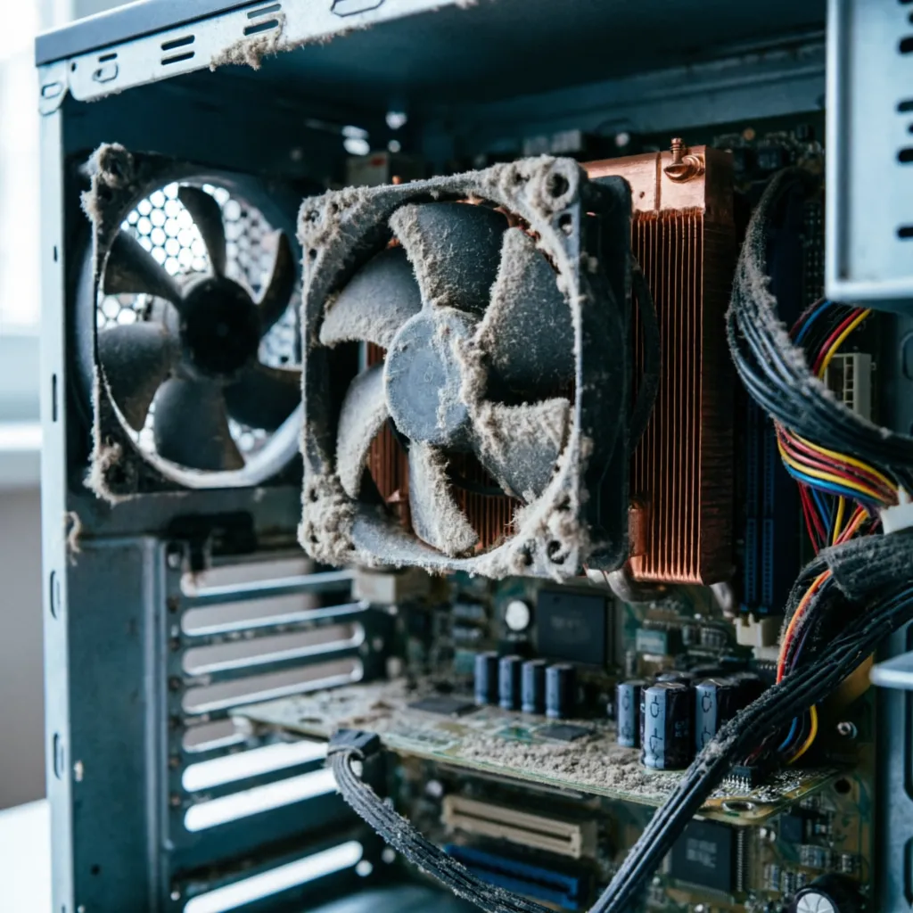

Как выбрать игровой компьютер в 2026 году
Разбираемся, какое железо актуально в 2026 году: процессоры, видеокарты, память и накопители для игр в Full HD, 2K и 4K.
Читать статью →Полезные статьи о выборе, обслуживании и ускорении техники: без воды и маркетинга, только практический опыт.

Разбираемся, какое железо актуально в 2026 году: процессоры, видеокарты, память и накопители для игр в Full HD, 2K и 4K.
Читать статью →
Arctic MX-6, Noctua NT-H1, Thermal Grizzly Kryonaut и другие: какую термопасту выбрать для ПК и ноутбука и когда её менять.
Читать статью →
Пыль, высохшая термопаста и изношенные термопрокладки: главные причины перегрева ноутбука и способы их устранить.
Читать статью →
SSD, память, чистка системы и обслуживание охлаждения: проверенный план ускорения старого ПК без покупки нового.
Читать статью →
Сравниваем Windows 10 и Windows 11 в 2026 году: требования, производительность, безопасность и сроки поддержки.
Читать статью →
Пошаговая инструкция по чистке ПК: инструмент, порядок разборки, чего нельзя делать и когда пора обратиться к мастеру.
Читать статью →